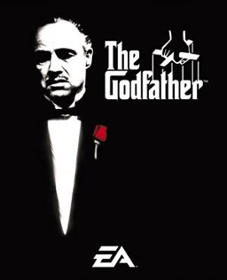

|
esaretin-bedeliEsaretin Bedeli, Andy ve Red isimli iki mahkumun parmaklıklar ardında kurdukları dünyanın hikayesini anlatıyor. Andy Dufresne, genç ve başarılı bir bankerdir. Karısını ve karısının sevgilisini öldürmek suçundan yargılanır ve ömür boyu hapis cezası alır. Shawsank Hapishanesi'nde dayak, işkence, tecavüz, her türlü durum yaşanmaktadır fakat Andy gene de hayata bağlı ve iyimserdir. Bu tutumu etrafındakileri de etkiler. Andy umutlu bakış açısıyla çevresindeki tüm mahkumları, parmaklıklar arkasında bile özgür bir yaşam olabileceğine inandırır. Andy'nin bu çabalarına ortak olacak bir arkadaşı da olacaktır: Red.Bir Stephen King uyarlaması olan filmde Morgan Freeman ve Tim Robbins başrolde. Film, 1995'te, aralarında en iyi film adaylığı da olmak üzere tam 7 dalda Oscar'a aday gösterildi. |

|
Hababam SınıfıHaylazlığına tam gaz devam eden Hababam Sınıfı, çok sevilen serinin bu filminde de pek farklı davranmıyor. Sınıflarına gelen yeni öğrenci Ahmet, Mahmut Hoca'nın eski bir arkadaşının oğludur. Babasının ölümünden sonra kimsesiz kalan bu genç, eğitim-öğretim hayatında her daim başarılı ve örnek bir öğrenci olmuştur. ... Üyeler |
|  |
BabaBabam ve Oğlum'da, 12 Eylül darbesinin yıktığı hayatlardan birinde yetişmektedir küçük Deniz. Annesini henüz doğmadan önce kaybetmiş, bir gazetede yazar olarak çalışan babası tarafından mütevazi bir evde yetiştirilmiştir. Babası dışında tanıdığı tek bir akrabası bile yoktur. Taki babası Sadık, bir gün Deniz'i ... Üyeler |